Candidate List 20260813Last night — ZTF: 382 passed basic cuts (13 young) · LSST: 0 passed basic cuts (0 young)Previous Day Next Day
Section 1: New Sources (age<1d) Section 2: Old (1-5d) sources observed last nightplaceholder
Section 2: Older Sources Observed Last Night (3)
0. [ZTF] ZTF26abmjmqk (FBOT?) [Back to Top] [Share] [Trigger Swift] [Fritz Alert] [Fritz Source] [Lasair]RA, Dec: 31.44858, -5.28866 2h 5m47.66s, -5d-17m-19.18sGalactic (l, b): 165.27453, -61.88398 ext(g-r) = 0.028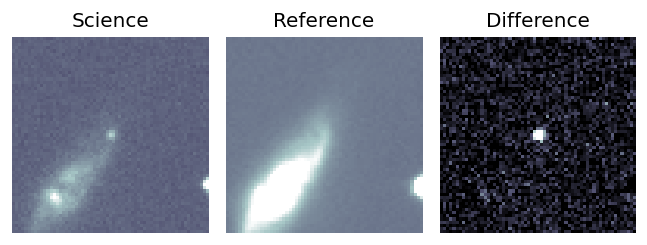
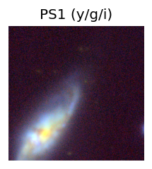
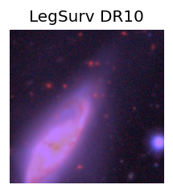
TESS: Sectors [ 4 97 108]
SDSS (<15 kpc):Found SDSS phot-z: z=0.05; peak abs mag = -20.78
PS1: 0 sources in 3 arcsec
LegacySurvey: 1 sources in 3 arcsec Closest: d = 6.22 arcsec, 323.5 deg (east of north) photoz=0.84 (68% bounds 0.78, 0.89), type=REX peak abs mag (ext. corrected) = -27.56 (68% bounds -27.37, -27.72)
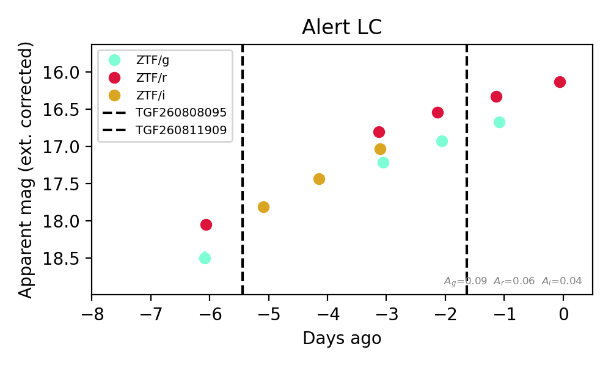
Extinction-corrected gr color:
From alerts: 0.34 +/- 0.05 mag
Extinction-corrected gi color:
From alerts: 0.17 +/- 0.05 mag
Extinction-corrected ri color:
From alerts: -0.23 +/- 0.05 mag
Consistent with synchrotron, g-r>0!
Rise Rate:
g: 0.34 mag/day
r: 0.4 mag/day
i: 0.39 mag/day
Fade Rate:
1. [ZTF] ZTF26abneopl (Afterglow?) [Back to Top] [Share] [Trigger Swift] [Fritz Alert] [Fritz Source] [Lasair]RA, Dec: 0.14775, -14.30501 0h 0m35.46s, -14d-18m-18.05sGalactic (l, b): 77.64715, -72.53906 ext(g-r) = 0.033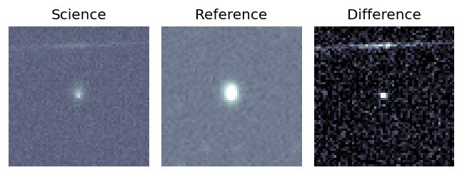
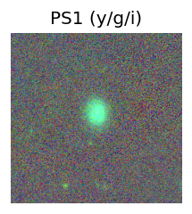
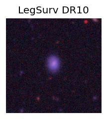
TESS: Sectors [ 2 29 69 107]
PS1: 0 sources in 3 arcsec
LegacySurvey: 1 sources in 3 arcsec Closest: d = 1.35 arcsec, 356.6 deg (east of north) photoz=0.06 (68% bounds 0.05, 0.07), type=EXP peak abs mag (ext. corrected) = -18.64 (68% bounds -18.27, -19.13)
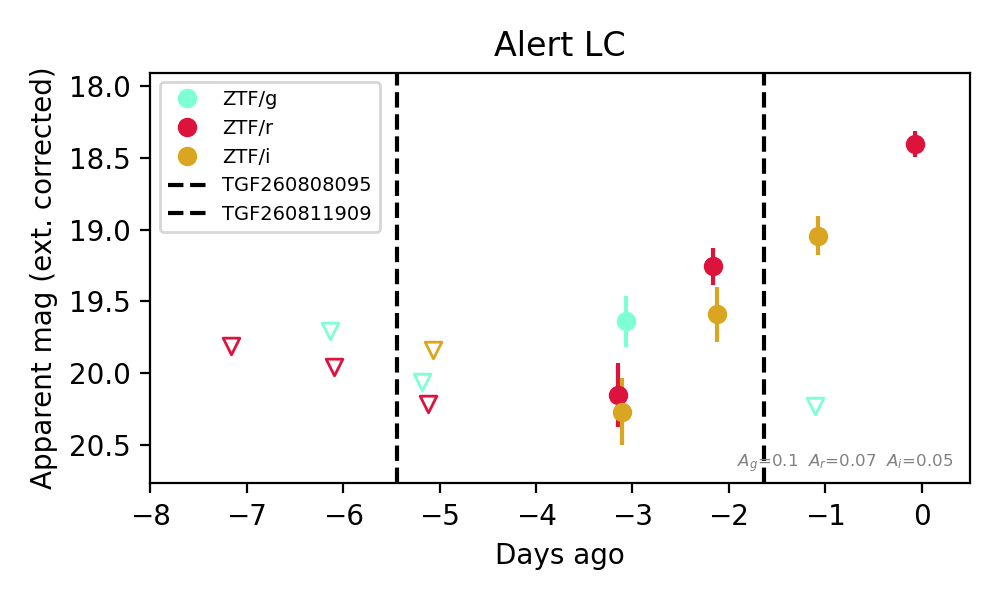
Extinction-corrected gr color:
From alerts: -0.52 +/- 0.28 mag
Extinction-corrected gi color:
From alerts: 1.19 +/- 99 mag
Extinction-corrected ri color:
From alerts: -0.34 +/- 0.23 mag
Rise Rate:
g: 0.2 mag/day
r: 0.48 mag/day
i: 0.59 mag/day
Fade Rate:
g: 0.3 mag/day
2. [ZTF] ZTF26abnuqyj (Afterglow?) [Back to Top] [Share] [Trigger Swift] [Fritz Alert] [Fritz Source] [Lasair]RA, Dec: 114.84089, 34.41203 7h39m21.81s, 34d24m43.32sGalactic (l, b): 185.16639, 24.21225 ext(g-r) = 0.047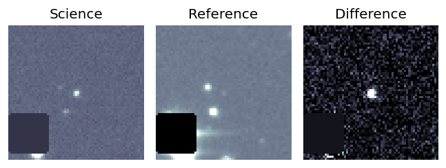
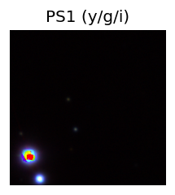
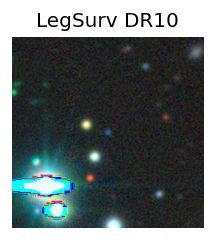
TESS: Sectors [20 47 60]
PS1: 0 sources in 3 arcsec
LegacySurvey: 1 sources in 3 arcsec Closest: d = 0.11 arcsec, 210.1 deg (east of north) photoz=0.02 (68% bounds 0.01, 0.57), type=PSF peak abs mag (ext. corrected) = -17.79 (68% bounds -16.37, -25.94)
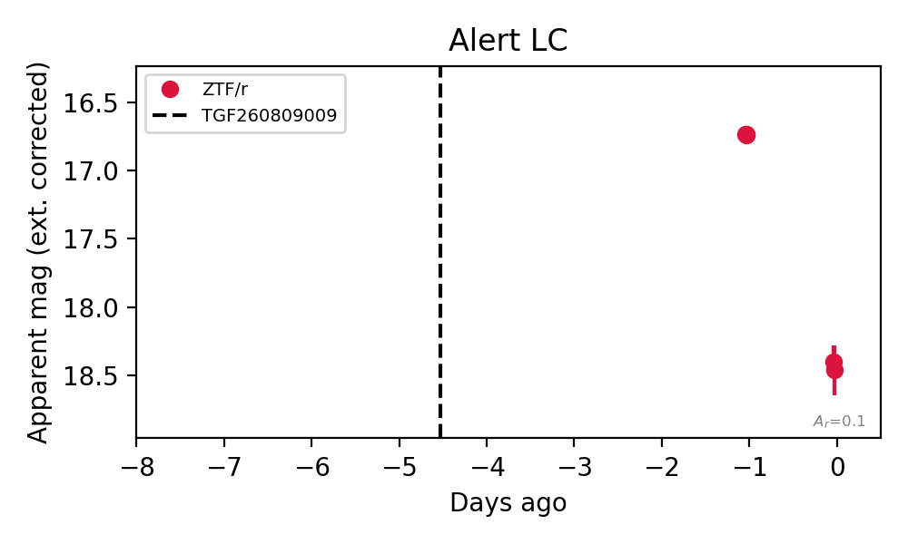
Rise Rate:
Fade Rate:
r: 1.68 mag/day